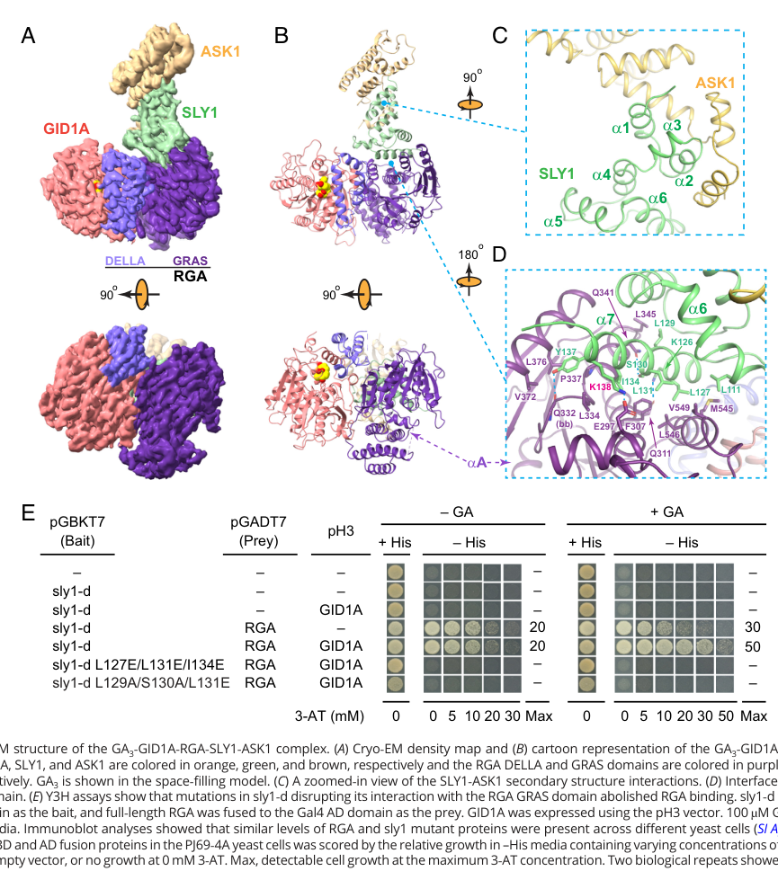

GID1A (GA INSENSITIVE DWARF1A; locus At3g05120) is one of three soluble nuclear gibberellin (GA) receptors in Arabidopsis thaliana (with the partially redundant paralogs GID1B and GID1C). It belongs to the carboxylesterase / hormone-sensitive lipase superfamily and adopts an alpha/beta-hydrolase fold, but it has lost catalytic hydrolase activity and instead functions as a hormone receptor. GID1A binds bioactive gibberellins (highest affinity for GA4) in a deep pocket that becomes capped by an N-terminal helical switch. GA binding triggers a conformational change in this N-terminal region that creates a surface for direct, GA-dependent interaction with the DELLA growth-repressor proteins (GAI, RGA, RGL1, RGL2, RGL3) via their N-terminal DELLA domain. The resulting GA-GID1-DELLA complex promotes recruitment of the SLEEPY1 (SLY1) F-box subunit of an SCF E3 ubiquitin ligase, leading to polyubiquitination and 26S-proteasomal degradation of DELLA repressors; GA-bound GID1 can also inhibit DELLA repression by a proteolysis-independent mechanism. Through this receptor activity GID1A acts as a positive regulator of GA signaling, derepressing the many developmental processes controlled by gibberellin, including seed germination, stem and root elongation, flower and floral-organ development, fruit-set and fruit growth, and fertility. The receptor is itself subject to regulation, being targeted for ubiquitin- dependent degradation by the RING E3 ligase GARU. GID1A is widely expressed and, among the three receptors, contributes the strongest single-gene effect; loss of all three GID1 genes produces an extreme, GA-insensitive dwarf.
Definition: Binding to a gibberellin and triggering a conformational change that promotes gibberellin-dependent physical interaction with, and subsequent degradation of, DELLA repressor proteins, thereby transducing the gibberellin signal.
Justification: GID1A is a bona fide gibberellin receptor whose ligand binding triggers a conformational change and GA-dependent interaction with DELLA effector proteins. No specific molecular function term for gibberellin receptor activity currently exists in GO (verified absent in OLS); the closest available verified term is GO:0010331 gibberellin binding, which does not capture the receptor (signal transduction) aspect. A child of hormone receptor activity / signaling receptor activity for gibberellin would more accurately represent this function.
Supporting Evidence:
| GO Term | Evidence | Action | Reason |
|---|---|---|---|
|
GO:0005634
nucleus
|
IEA
GO_REF:0000044 |
ACCEPT |
Summary: GID1A is a nuclear gibberellin receptor; nuclear localization is where it perceives GA and interacts with the nuclear-localized DELLA repressors.
Reason: Consistent with UniProt subcellular location (Nucleus) and with the repeated description of GID1 as a nuclear receptor; also supported by experimental IDA evidence (PMID:17416730, PMID:29042542).
Supporting Evidence:
PMID:19037309
By binding to a nuclear receptor, GIBBERELLIN INSENSITIVE DWARF1 (GID1), gibberellins regulate gene expression by promoting degradation of the transcriptional regulator DELLA proteins
|
|
GO:0009939
positive regulation of gibberellic acid mediated signaling pathway
|
IEA
GO_REF:0000117 |
ACCEPT |
Summary: As a GA receptor, GA-bound GID1A triggers degradation/inactivation of DELLA repressors, thereby positively regulating GA signaling. Genetic data show GID1a-c act as positive regulators of the GA signaling cascade.
Reason: Well supported experimentally; the receptor's effector role is to relieve DELLA repression and thus positively regulate the GA-mediated signaling pathway. This is a core function.
Supporting Evidence:
PMID:17194763
GID1a-1c act as positive regulators of GA signaling, consistent with a role in perceiving bioactive GAs
file:ARATH/GID1A/GID1A-deep-research-falcon.md
GA binding to GID1 promotes a **GA–GID1–DELLA** complex that (i) recruits ubiquitin-ligase machinery to degrade DELLA proteins (proteolysis-dependent signaling) and (ii) can also directly inhibit DELLA regulatory activity (proteolysis-independent signaling).
|
|
GO:0016787
hydrolase activity
|
IEA
GO_REF:0000002 |
REMOVE |
Summary: This InterPro-based annotation derives from the alpha/beta-hydrolase / carboxylesterase (hormone-sensitive lipase) fold. GID1 proteins retain the fold but lack hydrolase/esterase catalytic activity; they act as GA receptors.
Reason: GID1 was explicitly described as similar to the hormone-sensitive lipase family but WITHOUT hydrolase activity. The protein binds GA as a receptor in a pocket on the hydrolase fold rather than catalyzing hydrolysis. The nominal UniProt EC=3.-.-.- and InterPro fold mapping produce a spurious catalytic MF annotation that does not reflect the true (receptor) function.
Supporting Evidence:
PMID:24961590
GID1 was first described in rice as a nuclear localized protein similar to hormone-sensitive lipase family without hydrolase activity
file:ARATH/GID1A/GID1A-deep-research-falcon.md
the receptor lacks key catalytic features and shows **no detectable hydrolase activity** in a model substrate assay (p-nitrophenyl acetate)
|
|
GO:0048444
floral organ morphogenesis
|
IEA
GO_REF:0000117 |
KEEP AS NON CORE |
Summary: GA signaling through GID1 receptors is required for normal flower development; the gid1 triple mutant shows delayed flowering with severe defects in floral organ development. This is a downstream developmental output of GA signaling, partially redundant among GID1A/B/C.
Reason: A genuine GA-dependent developmental role, but it is a pleiotropic downstream consequence of the core receptor/signaling function rather than the molecular core function of GID1A. Largely redundant with GID1B/GID1C.
Supporting Evidence:
PMID:17194763
Flower formation occurred in long days but was delayed, with severe defects in floral organ development
|
|
GO:0048530
fruit morphogenesis
|
IEA
GO_REF:0000117 |
KEEP AS NON CORE |
Summary: GID1A is the major GA receptor controlling fruit-set and fruit growth in Arabidopsis, acting partially redundantly with GID1B and GID1C.
Reason: Supported by mutant analysis (PMID:24961590), but this is a downstream developmental output of GA perception rather than the molecular core function. Also annotated independently with experimental (IMP/IGI) evidence below.
Supporting Evidence:
PMID:24961590
GID1A plays a major role during fruit-set and growth, whereas GID1B and GID1C have specific roles in seed development and pod elongation
|
|
GO:0005515
protein binding
|
IPI
PMID:16709201 Identification and characterization of Arabidopsis gibberell... |
KEEP AS NON CORE |
Summary: IPI interactions (IntAct) with DELLA proteins RGL2 (Q8GXW1), RGL1 (Q9C8Y3), GAI (Q9LQT8), RGA (Q9SLH3) and GID2 (Q9STX3). These GA-dependent DELLA interactions are central to GID1A's receptor function, but the generic "protein binding" term is uninformative.
Reason: Documents the experimentally validated GA-dependent GID1A-DELLA interactions that constitute the receptor's effector step, but per curation guidelines bare protein binding is not retained as a core function. The mechanism is better represented by the GA signaling BP terms and a proposed GA-activated receptor / DELLA-binding MF.
Supporting Evidence:
PMID:16709201
A two-hybrid yeast system only showed in vivo interaction in the presence of GA(4) between each AtGID1 and the Arabidopsis DELLA proteins (AtDELLAs), negative regulators of GA signaling
|
|
GO:0005515
protein binding
|
IPI
PMID:17194763 Genetic characterization and functional analysis of the GID1... |
KEEP AS NON CORE |
Summary: IPI interactions with DELLA proteins GAI (Q9LQT8), RGA (Q9SLH3), RGL2 (Q9STX3 record). GA enhances GID1A-DELLA interaction; the N-terminal DELLA domain is required for binding.
Reason: Captures the core GA-dependent DELLA interaction but as the uninformative generic protein binding term. Retained as non-core supporting evidence.
Supporting Evidence:
PMID:17194763
GA enhances the interaction between GID1 and DELLA proteins. In addition, the N-terminal sequence containing the DELLA domain is necessary for GID1 binding
|
|
GO:0005515
protein binding
|
IPI
PMID:17416730 The DELLA domain of GA INSENSITIVE mediates the interaction ... |
KEEP AS NON CORE |
Summary: IPI interactions with DELLA proteins (GAI/RGA). The GAI DELLA domain is both required and sufficient to mediate GA-dependent interaction with the GID1A receptor, acting as a receiver domain.
Reason: Important mechanistic interaction but expressed as generic protein binding; retained as non-core.
Supporting Evidence:
PMID:17416730
we found that the GAI DELLA domain alone can mediate GA-dependent GID1A interactions, we propose that the DELLA domain functions as a receiver domain for activated GA receptors
file:ARATH/GID1A/GID1A-deep-research-falcon.md
The isolated DELLA domain can be **sufficient** for GA-dependent interaction with GID1A in yeast assays, and mutations in this region can confer GA insensitivity by disrupting GID1A binding.
|
|
GO:0005515
protein binding
|
IPI
PMID:18216856 Coordinated regulation of Arabidopsis thaliana development b... |
KEEP AS NON CORE |
Summary: IPI interactions including DELLA proteins (GAI, RGA, RGL1, RGL2, RGL3) from a study linking GA-GID1-DELLA signaling to light/PIF3 control of growth.
Reason: Generic protein binding; documents DELLA interactions relevant to the receptor mechanism. Retained as non-core.
Supporting Evidence:
PMID:18216856
DELLA proteins are GA-signalling repressors that block GA-induced development
|
|
GO:0005515
protein binding
|
IPI
PMID:18827182 Proteolysis-independent downregulation of DELLA repression i... |
KEEP AS NON CORE |
Summary: IPI interaction with DELLA GAI (Q9LQT8). GA-bound GID1 shows increasing interaction with DELLA at increasing GA levels and can block DELLA repression by direct interaction (proteolysis-independent mechanism).
Reason: Generic protein binding capturing the GA-dependent DELLA interaction; retained as non-core.
Supporting Evidence:
PMID:18827182
GA-bound GID1 can block DELLA repressor activity by direct protein-protein interaction with the DELLA domain
file:ARATH/GID1A/GID1A-deep-research-falcon.md
GA-bound GID1 can reduce DELLA repression without necessarily inducing DELLA degradation
|
|
GO:0005515
protein binding
|
IPI
PMID:19037309 Gibberellin-induced DELLA recognition by the gibberellin rec... |
KEEP AS NON CORE |
Summary: IPI interaction with DELLA GAI (Q9LQT8); the crystal structure of the GID1A-GA-GAI(DELLA) ternary complex defines the GA-dependent DELLA recognition interface.
Reason: Structurally defined DELLA interaction but annotated as generic protein binding; retained as non-core.
Supporting Evidence:
PMID:19037309
GID1A occludes gibberellin in a deep binding pocket covered by its N-terminal helical switch region, which in turn interacts with the DELLA domain containing DELLA, VHYNP and LExLE motifs
|
|
GO:0005515
protein binding
|
IPI
PMID:19500306 Differential expression and affinities of Arabidopsis gibber... |
KEEP AS NON CORE |
Summary: IPI interactions with DELLA proteins (RGL2 and others) examining differential receptor-DELLA affinities that explain phenotypic variation among gid1 mutants.
Reason: Generic protein binding documenting DELLA interactions; retained as non-core.
Supporting Evidence:
PMID:19500306
Differential expression and affinities of Arabidopsis gibberellin receptors can explain variation in phenotypes of multiple knock-out mutants
|
|
GO:0005515
protein binding
|
IPI
PMID:32612234 Extensive signal integration by the phytohormone protein net... |
KEEP AS NON CORE |
Summary: High-throughput yeast two-hybrid phytohormone interaction network; source of GID1A interactions including DELLAs plus non-DELLA partners such as importin alpha-3 (IMPA3, O04294) and MES17 (Q9SG92).
Reason: Large-scale interactome screen; the generic protein binding term is uninformative and the non-DELLA interactions are unvalidated for function. Retained as non-core.
Supporting Evidence:
PMID:32612234
Extensive signal integration by the phytohormone protein network
|
|
GO:0071456
cellular response to hypoxia
|
HEP
PMID:31519798 Integrative Analysis from the Epigenome to Translatome Uncov... |
MARK AS OVER ANNOTATED |
Summary: GID1A was identified as transcriptionally regulated in a genome-wide epigenome-to-translatome survey of seedling hypoxia/reoxygenation. This is a high-throughput expression pattern (HEP) observation, not direct evidence that GID1A functions in the hypoxia response.
Reason: HEP from a global stress profiling study captures co-regulation rather than a dedicated function. GID1A's characterized role is GA perception; there is no focused evidence that it acts within the hypoxia response specifically.
Supporting Evidence:
PMID:31519798
we performed a survey spanning the epigenome to translatome of Arabidopsis (Arabidopsis thaliana) seedlings in response to hypoxia and reoxygenation
|
|
GO:0005634
nucleus
|
ISM
GO_REF:0000122 |
ACCEPT |
Summary: Computational (AtSubP) prediction of nuclear localization, consistent with GID1A being a nuclear GA receptor and with experimental IDA evidence.
Reason: Redundant computational support for a nuclear location that is also backed by experimental IDA annotations and the receptor mechanism.
Supporting Evidence:
PMID:19037309
By binding to a nuclear receptor, GIBBERELLIN INSENSITIVE DWARF1 (GID1), gibberellins regulate gene expression
|
|
GO:0005515
protein binding
|
IPI
PMID:29042542 Tyrosine phosphorylation of the GARU E3 ubiquitin ligase pro... |
KEEP AS NON CORE |
Summary: IPI interaction (TAIR) with GARU (AT2G40830), the RING E3 ubiquitin ligase that targets GID1 for ubiquitin-dependent degradation, regulating receptor abundance and thus GA signaling.
Reason: Documents a regulatory interaction (GID1A as a substrate of GARU) but as the uninformative generic protein binding term. Retained as non-core.
Supporting Evidence:
PMID:29042542
GARU (GA receptor RING E3 ubiquitin ligase) mediates ubiquitin-dependent degradation of GID1
|
|
GO:0005634
nucleus
|
IDA
PMID:29042542 Tyrosine phosphorylation of the GARU E3 ubiquitin ligase pro... |
ACCEPT |
Summary: Direct experimental evidence localizing GID1A to the nucleus, consistent with its function as a nuclear GA receptor acting on nuclear DELLA proteins.
Reason: Experimental IDA support for the core nuclear localization.
Supporting Evidence:
PMID:29042542
Tyrosine phosphorylation of the GARU E3 ubiquitin ligase promotes gibberellin signalling by preventing GID1 degradation
|
|
GO:0009739
response to gibberellin
|
IGI
NOT
PMID:24961590 Role of the gibberellin receptors GID1 during fruit-set in A... |
KEEP AS NON CORE |
Summary: NOT|involved_in (IGI, with UniProtKB:Q9LYC1) from the fruit-set redundancy study. The negation reflects a specific genetic combination in which GID1A did not show a measurable contribution to a particular GA response readout, consistent with masking by redundant paralogs.
Reason: GID1A clearly does participate in GA responses overall (multiple lines of evidence below). This negated, combination-specific IGI captures redundancy masking in one assay context rather than a general absence of function; it is retained but not core. Cannot be over-interpreted as GID1A lacking GA-response function.
Supporting Evidence:
PMID:24961590
Functional study of gid1 mutant combinations confirms that GID1A plays a major role during fruit-set and growth, whereas GID1B and GID1C have specific roles in seed development and pod elongation
|
|
GO:0009739
response to gibberellin
|
IMP
PMID:24961590 Role of the gibberellin receptors GID1 during fruit-set in A... |
ACCEPT |
Summary: Mutant phenotype evidence that GID1A is involved in GA responses during fruit-set; gid1 mutant combinations show GA-perception defects in maternal pistil tissues.
Reason: Experimental (IMP) support for GID1A involvement in response to gibberellin, the expected role of a GA receptor.
Supporting Evidence:
PMID:24961590
the gid1a gid1c pistils displayed little or no GA response
|
|
GO:0009739
response to gibberellin
|
IGI
PMID:24961590 Role of the gibberellin receptors GID1 during fruit-set in A... |
ACCEPT |
Summary: Genetic-interaction evidence (with GID1C, UniProtKB:Q940G6) that GID1A acts partially redundantly with the other GID1 receptors in GA responses.
Reason: Supports involvement in response to gibberellin via redundancy analysis; consistent with the receptor's role.
Supporting Evidence:
PMID:24961590
our data suggest that the three GID1 GA receptors act partially redundantly in pistil development
|
|
GO:0048530
fruit morphogenesis
|
IMP
PMID:24961590 Role of the gibberellin receptors GID1 during fruit-set in A... |
KEEP AS NON CORE |
Summary: Mutant phenotype evidence that GID1A is the major GA receptor driving fruit-set and fruit (pod) growth and endocarp differentiation.
Reason: Genuine, experimentally supported developmental role, but a downstream output of GA perception rather than the molecular core function; partially redundant with paralogs.
Supporting Evidence:
PMID:24961590
GID1A has a major role in the regulation of the differentiation of the inner cell layers of the fruit pod
|
|
GO:0048530
fruit morphogenesis
|
IGI
PMID:24961590 Role of the gibberellin receptors GID1 during fruit-set in A... |
KEEP AS NON CORE |
Summary: Genetic-interaction evidence (with GID1C, UniProtKB:Q940G6) for GID1A function in fruit morphogenesis through partial redundancy with other GID1 receptors.
Reason: Downstream developmental output, redundant with paralogs; retained as non-core.
Supporting Evidence:
PMID:24961590
GID1A and GID1C are expressed in valves, while GID1A and GID1B are expressed in ovules
|
|
GO:1905516
positive regulation of fertilization
|
IGI
PMID:24961590 Role of the gibberellin receptors GID1 during fruit-set in A... |
KEEP AS NON CORE |
Summary: Genetic-interaction evidence (with UniProtKB:Q9LYC1) implicating GID1A in fertility/fertilization; gid1a-containing double mutants show reduced seed-set from maternal pistil defects.
Reason: A GA-dependent reproductive output downstream of GA perception; supported genetically but not the molecular core function. Retained as non-core.
Supporting Evidence:
PMID:24961590
the single gid1a and the double gid1a gid1b and gid1a gid1c mutants display compromised fertility
|
|
GO:0010476
gibberellin mediated signaling pathway
|
IGI
PMID:17521411 Multiple loss-of-function of Arabidopsis gibberellin recepto... |
ACCEPT |
Summary: Loss-of-function genetics show that the GID1 receptors are required for GA signaling; the triple mutant completely loses the ability to respond to GA, placing GID1A within the GA-mediated signaling pathway.
Reason: Core function. GID1A is a GA receptor that initiates the GA-mediated signaling pathway; strongly supported by genetic shutdown of GA signaling in gid1 multiple mutants.
Supporting Evidence:
PMID:17521411
the triple knockout seedlings completely lost their ability to respond to exogenously applied GA
file:ARATH/GID1A/GID1A-deep-research-falcon.md
GA **perception** occurs when a bioactive GA binds the soluble receptor **GID1**, enabling GID1 to recognize DELLA repressors and thereby switch GA signaling “on.”
|
|
GO:0010331
gibberellin binding
|
IDA
PMID:19037309 Gibberellin-induced DELLA recognition by the gibberellin rec... |
ACCEPT |
Summary: GID1A directly binds bioactive gibberellins (GA3, GA4) in a deep pocket, as established biochemically and by the crystal structures of GID1A-GA complexes. This is the defining molecular activity of the GA receptor.
Reason: Core molecular function, supported by direct biochemical binding assays and X-ray structures. There is currently no specific "gibberellin receptor activity" GO term, so gibberellin binding is the best available verified MF term for the receptor's ligand-binding activity (see proposed_new_terms).
Supporting Evidence:
PMID:19037309
GID1A occludes gibberellin in a deep binding pocket covered by its N-terminal helical switch region
PMID:16709201
The GA-binding activities of the three recombinant proteins were confirmed by an in vitro assay
file:ARATH/GID1A/GID1A-deep-research-falcon.md
**GA4** is highlighted as the **highest-affinity** GA and the most effective for driving GID1–DELLA complex formation in planta
|
|
GO:0009739
response to gibberellin
|
IEP
PMID:17933900 Global analysis of della direct targets in early gibberellin... |
ACCEPT |
Summary: GID1A is among the early GA-/DELLA-responsive genes; DELLA feedback regulates expression of GA receptor genes, placing GID1A in the response to gibberellin (here as an expression-pattern annotation).
Reason: Consistent with GID1A's involvement in GA responses; the IEP reflects feedback regulation of the receptor gene by GA/DELLA. Redundant with the stronger signaling annotations.
Supporting Evidence:
PMID:17933900
they help establish GA homeostasis by direct feedback regulation on the expression of GA biosynthetic and GA receptor genes
|
|
GO:0009739
response to gibberellin
|
IGI
PMID:18827182 Proteolysis-independent downregulation of DELLA repression i... |
ACCEPT |
Summary: Genetic-interaction evidence (with SLY1, AT4G02780) supporting GID1A's role in GA responses; GA-bound GID1 downregulates DELLA repression both by SLY1-dependent degradation and by a proteolysis-independent mechanism.
Reason: Supports involvement in response to gibberellin and the GA-GID1-DELLA-SLY1 mechanism. Consistent with the core receptor function.
Supporting Evidence:
PMID:18827182
GA-bound GID1 can block DELLA repressor activity by direct protein-protein interaction with the DELLA domain
|
|
GO:0005634
nucleus
|
IDA
PMID:17416730 The DELLA domain of GA INSENSITIVE mediates the interaction ... |
ACCEPT |
Summary: Direct experimental localization of GID1A to the nucleus, the compartment in which it engages nuclear DELLA repressors.
Reason: Experimental IDA support for the core nuclear localization.
Supporting Evidence:
PMID:17416730
mutants lacking the three GA INSENSITIVE DWARF1 (GID1) GA receptor genes are GA insensitive
|
|
GO:0005737
cytoplasm
|
IDA
PMID:17416730 The DELLA domain of GA INSENSITIVE mediates the interaction ... |
ACCEPT |
Summary: GID1A was also experimentally detected in the cytoplasm. As a soluble receptor, GID1A shows nucleo-cytoplasmic distribution in addition to its nuclear pool.
Reason: Direct experimental (IDA) evidence for cytoplasmic localization. Consistent with GID1A being a soluble receptor distributed between nucleus and cytoplasm; kept although the nuclear pool is most functionally relevant for DELLA interaction.
Supporting Evidence:
PMID:17416730
The DELLA domain of GA INSENSITIVE mediates the interaction with the GA INSENSITIVE DWARF1A gibberellin receptor of Arabidopsis
file:ARATH/GID1A/GID1A-deep-research-falcon.md
GFP-tagged Arabidopsis GID1A localized to both nucleus and cytoplasm, and this distribution was not altered by GA or paclobutrazol treatment.
|
Q: Does GID1A have any residual catalytic (esterase/lipase) activity in vivo, or is the alpha/beta-hydrolase fold entirely repurposed for ligand binding and the N-terminal switch?
Q: To what extent are the non-DELLA high-throughput interactors (e.g., importin alpha-3 IMPA3, MES17) functionally meaningful for GID1A regulation or trafficking, versus screen artifacts?
Q: What governs the nucleo-cytoplasmic partitioning of GID1A, and is GA perception by GID1A functionally restricted to the nucleus?
The research report should be a detailed narrative explaining the function, biological processes, and localization of the gene product. Citations should be given for all claims.
You should prioritize authoritative reviews and primary scientific literature when conducting research. You can supplement
this with annotations you find in gene/protein databases, but these can be outdated or inaccurate.
We are specifically interested in the primary function of the gene - for enzymes, what reaction is catalyzed, and what is the substrate specificity? For transporters, what is the substrate? For structural proteins or adapters, what is the broader structural role? For signaling molecules, what is the role in the pathway.
We are interested in where in or outside the cell the gene product carries out its function.
We are also interested in the signaling or biochemical pathways in which the gene functions. We are less interested in broad pleiotropic effects, except where these elucidate the precise role.
Include evidence where possible. We are interested in both experimental evidence as well as inference from structure, evolution, or bioinformatic analysis. Precise studies should be prioritized over high-throughput, where available.
The research target is Arabidopsis thaliana GID1A (GA INSENSITIVE DWARF 1A; AtGID1A), one of three Arabidopsis soluble gibberellin (GA) receptors (GID1A/B/C). The evidence base used here explicitly refers to Arabidopsis GID1A as a GA receptor, describes its hormone-sensitive lipase/carboxylesterase-like fold and lack of detectable hydrolase activity, and links it to canonical GA–GID1–DELLA signaling. (ueguchitanaka2007molecularinteractionsof pages 1-2, alabadi2025greenrevolutiondella pages 3-4)
Gibberellins (GAs) are diterpenoid plant hormones that promote growth and developmental transitions. In the modern signaling model, GA perception occurs when a bioactive GA binds the soluble receptor GID1, enabling GID1 to recognize DELLA repressors and thereby switch GA signaling “on.” (shani2024highlightsingibberellin pages 7-8, ueguchitanaka2007molecularinteractionsof pages 1-2)
A key ligand concept is that different GAs differ strongly in bioactivity and receptor engagement. In receptor–DELLA interaction assays, GA4 is highlighted as the highest-affinity GA and the most effective for driving GID1–DELLA complex formation in planta (e.g., GA4 treatment enabling co-IP of DELLA with GID1). (ueguchitanaka2007molecularinteractionsof pages 1-2)
DELLA proteins (e.g., RGA, GAI) are nuclear-localized growth repressors. GA binding to GID1 promotes a GA–GID1–DELLA complex that (i) recruits ubiquitin-ligase machinery to degrade DELLA proteins (proteolysis-dependent signaling) and (ii) can also directly inhibit DELLA regulatory activity (proteolysis-independent signaling). (ariizumi2008proteolysisindependentdownregulationof pages 1-2, dahal2025structuralinsightsinto pages 1-2)
A mechanistic definition that matters for functional annotation is that the N-terminal “DELLA domain” of DELLA proteins acts as the receiver that senses activated (GA-bound) GID1. The isolated DELLA domain can be sufficient for GA-dependent interaction with GID1A in yeast assays, and mutations in this region can confer GA insensitivity by disrupting GID1A binding. (willige2007thedelladomain pages 6-7, willige2007thedelladomain pages 1-2)
Although GID1 proteins are homologous to hormone-sensitive lipases/carboxylesterases, the receptor lacks key catalytic features and shows no detectable hydrolase activity in a model substrate assay (p-nitrophenyl acetate). This is central to functional annotation: GID1A is primarily a hormone receptor/adaptor, not a metabolic enzyme. (ueguchitanaka2007molecularinteractionsof pages 1-2, alabadi2025greenrevolutiondella pages 3-4)
Structural synthesis in recent authoritative reviews emphasizes that bioactive GA acts as an allosteric inducer: GA binding within the GID1A pocket closes an N-terminal “lid” and creates hydrophobic surfaces needed for DELLA binding (engaging conserved DELLA, LExLE, and VHYNP motifs). (shani2024highlightsingibberellin pages 7-8)
GID1A’s primary function is binding bioactive GA and, upon GA binding, recognizing DELLA repressors to switch GA signaling outputs. Direct interaction evidence includes GA-dependent co-immunoprecipitation of RGA with GID1:GFP from Arabidopsis extracts. (willige2007thedelladomain pages 4-6)
In comparative GA-binding/interaction studies (Arabidopsis GID1 proteins assayed similarly to rice GID1), GA4 is described as having the highest affinity and being most effective in planta, with DELLA co-IP detected from GA4-treated extracts. (ueguchitanaka2007molecularinteractionsof pages 1-2)
Willige et al. provide strong functional dissection: deletion of the DELLA domain abolishes interaction with GID1A, while the GAI DELLA domain alone (aa 1–73) is sufficient for GA-dependent interaction with GID1A in yeast two-hybrid assays. These data support the model that the DELLA domain is a dedicated “receiver” for activated GA receptors. (willige2007thedelladomain pages 6-7)
Genetic and biochemical evidence links GID1 receptors to GA-promoted DELLA turnover. In Arabidopsis plants lacking all three receptors (gid1 triple mutants), DELLA proteins are stabilized: RGA accumulates and GA treatment that normally causes DELLA degradation in wild type does not destabilize RGA/GAI in the triple mutant. (willige2007thedelladomain pages 4-6)
Recent structural work further connects receptor engagement to ubiquitin machinery: cryo-EM structures resolve a GA3–GID1A–RGA–SLY1–ASK1 complex, supporting the model that GA-bound GID1A positions DELLA for recognition by SCF-type ubiquitin ligase components (through SLY1/ASK1 association) and subsequent proteasomal degradation. (dahal2025structuralinsightsinto pages 4-5, dahal2025structuralinsightsinto media 5ad4625d)
A key extension of functional understanding is that GA-bound GID1 can reduce DELLA repression without necessarily inducing DELLA degradation. In Arabidopsis, overexpression of GID1 genes can rescue sly1 dwarf/infertility phenotypes without reducing RGA abundance, implying a DELLA-neutralization mechanism dependent on GA, receptor levels, and an intact DELLA motif. (ariizumi2008proteolysisindependentdownregulationof pages 1-2)
Consistent with this, recent structural/functional analysis proposes a competition mechanism: GA–GID1A binding to DELLA’s GRAS region overlaps transcription-factor binding surfaces (e.g., IDD transcription factors), and yeast three-hybrid assays show GA-dependent attenuation of IDD1–RGA interaction by GID1. (dahal2025structuralinsightsinto pages 6-8, dahal2025structuralinsightsinto pages 1-2)
Willige et al. report that GID1A:GFP localizes to both nucleus and cytoplasm, and that this nucleocytoplasmic localization is not detectably altered by GA or paclobutrazol treatment in their assays. This supports a model where receptor availability spans compartments, while key downstream transcriptional regulation occurs in the nucleus through DELLA-associated complexes. (willige2007thedelladomain pages 4-6)
An authoritative 2024 review also summarizes GID1 localization as cytoplasmic and nuclear in Arabidopsis. (shani2024highlightsingibberellin pages 7-8)
A defining feature of Arabidopsis GID1A functional interpretation is redundancy among the three receptors:
* gid1 single mutants show little/no obvious GA growth defects.
* gid1 double mutants show partial impairment.
* gid1a gid1b gid1c triple mutants are extremely GA-insensitive and severely dwarfed; they can fail to germinate unless manually rescued (seed coat removal), and they never flowered in one study. (willige2007thedelladomain pages 4-6, ariizumi2008proteolysisindependentdownregulationof pages 1-2)
In adult-stage phenotyping, gid1a gid1c double mutants show stronger reductions in GA-induced hypocotyl elongation and adult height compared with combinations involving gid1b, indicating GID1A contributes strongly to adult vegetative GA responsiveness. (willige2007thedelladomain pages 7-8)
A 2024 Plant Physiology review (“Highlights in gibberellin research: A tale of the dwarf and the slender”; published Jan 2024; https://doi.org/10.1093/plphys/kiae044) summarizes receptor mechanism, emphasizing GA as an allosteric inducer that closes the GID1 “lid,” enabling DELLA binding, and reiterates nucleocytoplasmic localization and redundancy of GID1A/B/C in Arabidopsis. (shani2024highlightsingibberellin pages 7-8)
A 2024 Nature Communications study (published May 2024; https://doi.org/10.1038/s41467-024-48116-4) reports a ratiometric GA signaling biosensor engineered from a DELLA protein to preserve GA-responsive degradation while suppressing DELLA’s regulatory output. The biosensor was used to map GA signaling in the shoot apical meristem, revealing high GA signaling in cells between organ primordia that are precursors of internodes, and supporting a role for GA signaling in internode specification. This represents a practical tool that leverages the GA–GID1–DELLA module (including GID1a/b/c receptors) for in vivo quantitative readouts. (dahal2025structuralinsightsinto pages 5-6, shani2024highlightsingibberellin pages 7-8)
Note: While this biosensor study is not exclusively about GID1A, it depends on the same core receptor–DELLA degradation logic that GID1A participates in. (dahal2025structuralinsightsinto pages 5-6, shani2024highlightsingibberellin pages 7-8)
Across primary and review literature, the consensus expert model is:
1) GID1A is the soluble GA receptor that binds bioactive GA and converts it into a protein–protein interaction signal by engaging DELLA motifs. (shani2024highlightsingibberellin pages 7-8, willige2007thedelladomain pages 6-7)
2) GA-bound GID1A initiates DELLA neutralization by two separable mechanisms: ubiquitin-mediated degradation and direct inhibition/competition at DELLA interaction surfaces. (ariizumi2008proteolysisindependentdownregulationof pages 1-2, dahal2025structuralinsightsinto pages 6-8)
3) Despite sequence similarity to carboxylesterases/hormone-sensitive lipases, GID1 proteins are interpreted as non-enzymatic receptors. (ueguchitanaka2007molecularinteractionsof pages 1-2, alabadi2025greenrevolutiondella pages 3-4)
Recent cryo-EM work reports a GA3–GID1A–RGA–SLY1–ASK1 quaternary complex solved to 2.72 Å resolution and an alternate conformation at 2.76 Å, with mass photometry measuring the complex at 148 kDa (predicted 147 kDa). These are direct quantitative anchors for the physical signaling complex linking receptor to ubiquitin machinery. (dahal2025structuralinsightsinto pages 4-5, dahal2025structuralinsightsinto pages 5-6)
Yeast three-hybrid assays probing GA-dependent attenuation of IDD1–RGA interaction by GID1 used 100 µM GA3 in GA-containing medium, providing an explicit condition for the GA-dependent interaction effects. (dahal2025structuralinsightsinto pages 6-8)
Multiple sources report a graded genetic series (single → double → triple) where the gid1 triple mutant is extremely GA-insensitive and shows severe developmental arrest/dwarfism, with failure to germinate unless rescued. While not expressed as numeric effect sizes in the excerpts available here, this is a strong, widely cited functional-genetic statistic about essential pathway function. (willige2007thedelladomain pages 4-6, ariizumi2008proteolysisindependentdownregulationof pages 1-2)
Molecular function: soluble GA receptor; GA binding promotes DELLA binding and downstream signaling complex assembly. No hydrolase activity detected in model esterase assay (p-nitrophenyl acetate). (ueguchitanaka2007molecularinteractionsof pages 1-2, willige2007thedelladomain pages 6-7)
Biological process: GA signal transduction regulating growth and development through DELLA neutralization (proteolysis-dependent via SCFSLY1-mediated degradation, and proteolysis-independent via direct inhibition/competition). (willige2007thedelladomain pages 4-6, ariizumi2008proteolysisindependentdownregulationof pages 1-2)
Cellular component: nucleocytoplasmic (nucleus + cytoplasm). (willige2007thedelladomain pages 4-6)
Key partners: DELLA repressors such as RGA (and GAI in some assays), and SCF components including SLY1/ASK1 in GA-dependent complexes. (willige2007thedelladomain pages 4-6, dahal2025structuralinsightsinto pages 4-5)
| Claim/Function | Key evidence (1-2 sentences) | System/Assay | Quantitative details (if any) | Source (include DOI URL and year) |
|---|---|---|---|---|
| Arabidopsis GID1 proteins, including GID1A, are required GA receptors in vivo | Triple gid1 mutants are GA-insensitive, fail to germinate unless the seed coat is removed, and develop into dark-green, severely dwarfed plants. Single mutants show little phenotype, while double mutants are partially impaired, supporting redundancy with an important contribution from GID1A. (willige2007thedelladomain pages 4-6, ariizumi2008proteolysisindependentdownregulationof pages 1-2) | Arabidopsis genetics; mutant phenotyping | Triple mutant fully impaired in GA responses; single mutants weak, double mutants partial (willige2007thedelladomain pages 4-6, ariizumi2008proteolysisindependentdownregulationof pages 1-2) | Willige et al., 2007, The Plant Cell, https://doi.org/10.1105/tpc.107.051441; Ariizumi et al., 2008, The Plant Cell, https://doi.org/10.1105/tpc.108.058487 |
| GID1A binds DELLA proteins in a GA-dependent manner | GID1:GFP co-immunoprecipitated RGA in a GA-dependent manner from Arabidopsis extracts, and yeast assays showed that the DELLA domain is required and sufficient for GA-dependent interaction with GID1A. This established GID1A as the activated receptor recognized by DELLA repressors. (willige2007thedelladomain pages 4-6, willige2007thedelladomain pages 6-7) | Co-immunoprecipitation from Arabidopsis; yeast two-hybrid | DELLA domain alone (GAI aa 1-73) sufficient; ~10-fold reduced interaction for a DELLA-domain mutant variant (willige2007thedelladomain pages 6-7) | Willige et al., 2007, The Plant Cell, https://doi.org/10.1105/tpc.107.051441 |
| GID1A is nucleocytoplasmic | GFP-tagged Arabidopsis GID1A localized to both nucleus and cytoplasm, and this distribution was not altered by GA or paclobutrazol treatment. This indicates receptor function is not restricted to one compartment, although nuclear action is central to DELLA regulation. (willige2007thedelladomain pages 4-6, shani2024highlightsingibberellin pages 7-8) | GFP fusion localization in Arabidopsis | No GA/PAC-dependent relocalization detected (willige2007thedelladomain pages 4-6) | Willige et al., 2007, The Plant Cell, https://doi.org/10.1105/tpc.107.051441; Shani et al., 2024, Plant Physiology, https://doi.org/10.1093/plphys/kiae044 |
| Arabidopsis GID1 proteins show bioactive GA selectivity, with GA4 most effective | Recombinant Arabidopsis GID1 proteins behaved similarly to rice GID1 in ligand selectivity and affinity, and GA4 had the highest affinity in interaction assays and was most effective in planta. Pull-downs showed DELLA association with GID1 preferentially after GA4 treatment. (ueguchitanaka2007molecularinteractionsof pages 1-2) | Recombinant protein GA-binding; yeast interaction assays; in vivo pull-down | GA4 reported as highest-affinity ligand and most effective GA in planta (ueguchitanaka2007molecularinteractionsof pages 1-2) | Ueguchi-Tanaka et al., 2007, The Plant Cell, https://doi.org/10.1105/tpc.106.043729 |
| GID1A has an esterase/lipase-like fold but no detectable hydrolase activity | Although GID1 proteins are homologous to hormone-sensitive lipases/carboxylesterases, the receptor lacks a conserved catalytic residue and did not show hydrolase activity with p-nitrophenyl acetate. This supports the view that GID1A is a hormone receptor derived from, but not functioning as, a hydrolase. (ueguchitanaka2007molecularinteractionsof pages 1-2, alabadi2025greenrevolutiondella pages 3-4) | Sequence/structural comparison; enzymatic assay | No hydrolase activity detected with p-nitrophenyl acetate; missing conserved HSL catalytic residue (ueguchitanaka2007molecularinteractionsof pages 1-2) | Ueguchi-Tanaka et al., 2007, The Plant Cell, https://doi.org/10.1105/tpc.106.043729; Alabadí & Sun, 2025, Annu Rev Plant Biol, https://doi.org/10.1146/annurev-arplant-053124-050732 |
| GA-bound GID1A can repress DELLA output even without DELLA degradation | Overexpression of GID1 genes rescued sly1 dwarf and infertility phenotypes without reducing RGA abundance, indicating a proteolysis-independent mode of DELLA repression that still depends on GA, receptor abundance, and an intact DELLA motif. (ariizumi2008proteolysisindependentdownregulationof pages 1-2) | Arabidopsis transgenics in sly1 background | Rescue occurred without detectable decrease in DELLA RGA protein level (ariizumi2008proteolysisindependentdownregulationof pages 1-2) | Ariizumi et al., 2008, The Plant Cell, https://doi.org/10.1105/tpc.108.058487 |
| Structural mechanism: GA allosterically activates GID1A for DELLA binding | Structural studies summarized in a 2024 review show that bioactive GA binds the AtGID1A pocket, closes the N-terminal lid, and creates hydrophobic surfaces that engage DELLA-domain motifs (DELLA, LExLE, VHYNP). This explains how ligand perception is coupled to signaling complex assembly. (shani2024highlightsingibberellin pages 7-8) | Structural biology synthesis/review of X-ray studies | Review highlights mechanism in Fig. 2, Fig. 3, Boxes 1 and 2 (shani2024highlightsingibberellin pages 7-8) | Shani et al., 2024, Plant Physiology, https://doi.org/10.1093/plphys/kiae044 |
| GID1A forms a GA3-bound quaternary complex with RGA and SLY1-ASK1 that explains DELLA degradation | Cryo-EM resolved GA3-GID1A-RGA-SLY1-ASK1 complexes, showing the DELLA domain acts as a molecular bridge to stabilize GID1A-GRAS binding and position SLY1 for SCF-mediated ubiquitination. These structures directly connect ligand perception to substrate recognition by the degradation machinery. (dahal2025structuralinsightsinto pages 4-5, dahal2025structuralinsightsinto pages 5-6, dahal2025structuralinsightsinto pages 1-2) | Cryo-EM; mass photometry; Y3H/biochemical validation | Quaternary complex at 2.72 Å; alternate complex at 2.76 Å; measured mass 148 kDa vs 147 kDa predicted; Y3H used 100 µM GA3 (dahal2025structuralinsightsinto pages 4-5, dahal2025structuralinsightsinto pages 5-6, dahal2025structuralinsightsinto pages 6-8) | Dahal et al., 2025, PNAS, https://doi.org/10.1073/pnas.2511012122 |
| GA-GID1A also suppresses DELLA by competing with transcription-factor binding | Recent structural/functional work indicates GID1A binding to the DELLA GRAS region overlaps surfaces used by IDD transcription factors, attenuating IDD1-RGA interaction in a GA-dependent manner. This extends GID1A function beyond DELLA proteolysis to direct repression of DELLA transcriptional activity. (dahal2025structuralinsightsinto pages 6-8, dahal2025structuralinsightsinto pages 1-2) | Cryo-EM, AlphaFold modeling, yeast three-hybrid | IDD1-RGA attenuation observed in +GA medium containing 100 µM GA3 (dahal2025structuralinsightsinto pages 6-8) | Dahal et al., 2025, PNAS, https://doi.org/10.1073/pnas.2511012122 |
Table: This table compiles the core experimental and review evidence supporting functional annotation of Arabidopsis GID1A as a gibberellin receptor. It highlights genetics, DELLA interaction, localization, ligand selectivity, structural mechanism, and newer evidence for both proteolysis-dependent and proteolysis-independent signaling.
The following figure shows the cryo-EM density/model of the GA3–GID1A–RGA–SLY1–ASK1 complex that physically links GA perception by GID1A to DELLA recognition by SCF machinery. (dahal2025structuralinsightsinto media 5ad4625d)
Some highly relevant Arabidopsis-focused primary papers (e.g., the original Arabidopsis GID1 receptor identification/characterization papers and some localization-focused work) were not obtainable in the current retrieval session. Consequently, the report emphasizes what could be directly supported from the accessible primary/review texts, including definitive genetics, co-IP, ligand ranking statements (GA4), and high-resolution structural complexes. (willige2007thedelladomain pages 4-6, ueguchitanaka2007molecularinteractionsof pages 1-2, dahal2025structuralinsightsinto pages 4-5)
References
(ueguchitanaka2007molecularinteractionsof pages 1-2): Miyako Ueguchi-Tanaka, Masatoshi Nakajima, Etsuko Katoh, Hiroko Ohmiya, Kenji Asano, Shoko Saji, Xiang Hongyu, Motoyuki Ashikari, Hidemi Kitano, Isomaro Yamaguchi, and Makoto Matsuoka. Molecular interactions of a soluble gibberellin receptor, gid1, with a rice della protein, slr1, and gibberellin[w]. The Plant Cell Online, 19:2140-2155, Jul 2007. URL: https://doi.org/10.1105/tpc.106.043729, doi:10.1105/tpc.106.043729. This article has 517 citations.
(alabadi2025greenrevolutiondella pages 3-4): David Alabadí and Tai-ping Sun. Green revolution della proteins: functional analysis and regulatory mechanisms. Annual Review of Plant Biology, 76(1):373-400, May 2025. URL: https://doi.org/10.1146/annurev-arplant-053124-050732, doi:10.1146/annurev-arplant-053124-050732. This article has 17 citations and is from a domain leading peer-reviewed journal.
(shani2024highlightsingibberellin pages 7-8): Eilon Shani, Peter Hedden, and Tai-ping Sun. Highlights in gibberellin research: a tale of the dwarf and the slender. Plant Physiology, 195:111-134, Jan 2024. URL: https://doi.org/10.1093/plphys/kiae044, doi:10.1093/plphys/kiae044. This article has 92 citations and is from a highest quality peer-reviewed journal.
(ariizumi2008proteolysisindependentdownregulationof pages 1-2): T. Ariizumi, K. Murase, Tai-ping Sun, and C. Steber. Proteolysis-independent downregulation of della repression in arabidopsis by the gibberellin receptor gibberellin insensitive dwarf1[w]. The Plant Cell Online, 20:2447-2459, Sep 2008. URL: https://doi.org/10.1105/tpc.108.058487, doi:10.1105/tpc.108.058487. This article has 218 citations.
(dahal2025structuralinsightsinto pages 1-2): Pawan Dahal, Yan Wang, Jianhong Hu, Jeongmoo Park, Karly Forker, Zhong-Lin Zhang, Kedar Sharma, Mario J. Borgnia, Tai-ping Sun, and Pei Zhou. Structural insights into proteolysis-dependent and -independent suppression of the master regulator della by the gibberellin receptor. Proceedings of the National Academy of Sciences of the United States of America, 122 32:e2511012122, Aug 2025. URL: https://doi.org/10.1073/pnas.2511012122, doi:10.1073/pnas.2511012122. This article has 10 citations and is from a highest quality peer-reviewed journal.
(willige2007thedelladomain pages 6-7): Björn C. Willige, Soumya Ghosh, Carola Nill, Melina Zourelidou, Esther M.N. Dohmann, Andreas Maier, and Claus Schwechheimer. The della domain of ga insensitive mediates the interaction with the ga insensitive dwarf1a gibberellin receptor ofarabidopsis. The Plant Cell, 19:1209-1220, Apr 2007. URL: https://doi.org/10.1105/tpc.107.051441, doi:10.1105/tpc.107.051441. This article has 616 citations.
(willige2007thedelladomain pages 1-2): Björn C. Willige, Soumya Ghosh, Carola Nill, Melina Zourelidou, Esther M.N. Dohmann, Andreas Maier, and Claus Schwechheimer. The della domain of ga insensitive mediates the interaction with the ga insensitive dwarf1a gibberellin receptor ofarabidopsis. The Plant Cell, 19:1209-1220, Apr 2007. URL: https://doi.org/10.1105/tpc.107.051441, doi:10.1105/tpc.107.051441. This article has 616 citations.
(willige2007thedelladomain pages 4-6): Björn C. Willige, Soumya Ghosh, Carola Nill, Melina Zourelidou, Esther M.N. Dohmann, Andreas Maier, and Claus Schwechheimer. The della domain of ga insensitive mediates the interaction with the ga insensitive dwarf1a gibberellin receptor ofarabidopsis. The Plant Cell, 19:1209-1220, Apr 2007. URL: https://doi.org/10.1105/tpc.107.051441, doi:10.1105/tpc.107.051441. This article has 616 citations.
(dahal2025structuralinsightsinto pages 4-5): Pawan Dahal, Yan Wang, Jianhong Hu, Jeongmoo Park, Karly Forker, Zhong-Lin Zhang, Kedar Sharma, Mario J. Borgnia, Tai-ping Sun, and Pei Zhou. Structural insights into proteolysis-dependent and -independent suppression of the master regulator della by the gibberellin receptor. Proceedings of the National Academy of Sciences of the United States of America, 122 32:e2511012122, Aug 2025. URL: https://doi.org/10.1073/pnas.2511012122, doi:10.1073/pnas.2511012122. This article has 10 citations and is from a highest quality peer-reviewed journal.
(dahal2025structuralinsightsinto media 5ad4625d): Pawan Dahal, Yan Wang, Jianhong Hu, Jeongmoo Park, Karly Forker, Zhong-Lin Zhang, Kedar Sharma, Mario J. Borgnia, Tai-ping Sun, and Pei Zhou. Structural insights into proteolysis-dependent and -independent suppression of the master regulator della by the gibberellin receptor. Proceedings of the National Academy of Sciences of the United States of America, 122 32:e2511012122, Aug 2025. URL: https://doi.org/10.1073/pnas.2511012122, doi:10.1073/pnas.2511012122. This article has 10 citations and is from a highest quality peer-reviewed journal.
(dahal2025structuralinsightsinto pages 6-8): Pawan Dahal, Yan Wang, Jianhong Hu, Jeongmoo Park, Karly Forker, Zhong-Lin Zhang, Kedar Sharma, Mario J. Borgnia, Tai-ping Sun, and Pei Zhou. Structural insights into proteolysis-dependent and -independent suppression of the master regulator della by the gibberellin receptor. Proceedings of the National Academy of Sciences of the United States of America, 122 32:e2511012122, Aug 2025. URL: https://doi.org/10.1073/pnas.2511012122, doi:10.1073/pnas.2511012122. This article has 10 citations and is from a highest quality peer-reviewed journal.
(willige2007thedelladomain pages 7-8): Björn C. Willige, Soumya Ghosh, Carola Nill, Melina Zourelidou, Esther M.N. Dohmann, Andreas Maier, and Claus Schwechheimer. The della domain of ga insensitive mediates the interaction with the ga insensitive dwarf1a gibberellin receptor ofarabidopsis. The Plant Cell, 19:1209-1220, Apr 2007. URL: https://doi.org/10.1105/tpc.107.051441, doi:10.1105/tpc.107.051441. This article has 616 citations.
(dahal2025structuralinsightsinto pages 5-6): Pawan Dahal, Yan Wang, Jianhong Hu, Jeongmoo Park, Karly Forker, Zhong-Lin Zhang, Kedar Sharma, Mario J. Borgnia, Tai-ping Sun, and Pei Zhou. Structural insights into proteolysis-dependent and -independent suppression of the master regulator della by the gibberellin receptor. Proceedings of the National Academy of Sciences of the United States of America, 122 32:e2511012122, Aug 2025. URL: https://doi.org/10.1073/pnas.2511012122, doi:10.1073/pnas.2511012122. This article has 10 citations and is from a highest quality peer-reviewed journal.

hydrolase activity (GO:0016787, IEA from InterPro) is a spurious over-annotation derived from the lipase/esterase fold and should be removed. The UniProt EC=3.-.-.- is nominal; the catalytic Ser is not functional as a hydrolase in vivo.fruit morphogenesis (GO:0048530) and positive regulation of fertilization (GO:1905516) for GID1A. The GOA IGI/IMP set (with GID1B Q9LYC1, GID1C Q940G6) reflects genetic redundancy analysis in this paper.protein binding is uninformative.The Falcon deep-research report (GID1A-deep-research-falcon.md) corroborates and extends the existing review with no contradictions. Key points used to strengthen the review:
No UNDECIDED annotations were present, so none required resolution. No new GO annotation could be added with a verifiable GOA/UniProt ID (a dedicated "gibberellin receptor activity" MF still does not exist in GO and remains in proposed_new_terms). The report does not contradict the negated response to gibberellin annotation (redundancy masking) or the hypoxia HEP over-annotation call. New references: Shani et al. 2024 (Plant Physiol), Alabadí & Sun 2025 (Annu Rev Plant Biol), Dahal et al. 2025 (PNAS) — cited within the falcon report rather than added as standalone PMIDs.
id: Q9MAA7
gene_symbol: GID1A
product_type: PROTEIN
status: DRAFT
taxon:
id: NCBITaxon:3702
label: Arabidopsis thaliana
description: GID1A (GA INSENSITIVE DWARF1A; locus At3g05120) is one of three soluble
nuclear gibberellin (GA) receptors in Arabidopsis thaliana (with the partially
redundant paralogs GID1B and GID1C). It belongs to the carboxylesterase /
hormone-sensitive lipase superfamily and adopts an alpha/beta-hydrolase fold, but
it has lost catalytic hydrolase activity and instead functions as a hormone
receptor. GID1A binds bioactive gibberellins (highest affinity for GA4) in a deep
pocket that becomes capped by an N-terminal helical switch. GA binding triggers a
conformational change in this N-terminal region that creates a surface for direct,
GA-dependent interaction with the DELLA growth-repressor proteins (GAI, RGA, RGL1,
RGL2, RGL3) via their N-terminal DELLA domain. The resulting GA-GID1-DELLA complex
promotes recruitment of the SLEEPY1 (SLY1) F-box subunit of an SCF E3 ubiquitin
ligase, leading to polyubiquitination and 26S-proteasomal degradation of DELLA
repressors; GA-bound GID1 can also inhibit DELLA repression by a
proteolysis-independent mechanism. Through this receptor activity GID1A acts as a
positive regulator of GA signaling, derepressing the many developmental processes
controlled by gibberellin, including seed germination, stem and root elongation,
flower and floral-organ development, fruit-set and fruit growth, and fertility.
The receptor is itself subject to regulation, being targeted for ubiquitin-
dependent degradation by the RING E3 ligase GARU. GID1A is widely expressed and,
among the three receptors, contributes the strongest single-gene effect; loss of
all three GID1 genes produces an extreme, GA-insensitive dwarf.
existing_annotations:
- term:
id: GO:0005634
label: nucleus
evidence_type: IEA
original_reference_id: GO_REF:0000044
qualifier: located_in
review:
summary: GID1A is a nuclear gibberellin receptor; nuclear localization is where
it perceives GA and interacts with the nuclear-localized DELLA repressors.
action: ACCEPT
reason: Consistent with UniProt subcellular location (Nucleus) and with the
repeated description of GID1 as a nuclear receptor; also supported by
experimental IDA evidence (PMID:17416730, PMID:29042542).
supported_by:
- reference_id: PMID:19037309
supporting_text: By binding to a nuclear receptor, GIBBERELLIN INSENSITIVE
DWARF1 (GID1), gibberellins regulate gene expression by promoting
degradation of the transcriptional regulator DELLA proteins
- term:
id: GO:0009939
label: positive regulation of gibberellic acid mediated signaling pathway
evidence_type: IEA
original_reference_id: GO_REF:0000117
qualifier: involved_in
review:
summary: As a GA receptor, GA-bound GID1A triggers degradation/inactivation of
DELLA repressors, thereby positively regulating GA signaling. Genetic data
show GID1a-c act as positive regulators of the GA signaling cascade.
action: ACCEPT
reason: Well supported experimentally; the receptor's effector role is to
relieve DELLA repression and thus positively regulate the GA-mediated
signaling pathway. This is a core function.
supported_by:
- reference_id: PMID:17194763
supporting_text: GID1a-1c act as positive regulators of GA signaling,
consistent with a role in perceiving bioactive GAs
- reference_id: file:ARATH/GID1A/GID1A-deep-research-falcon.md
supporting_text: GA binding to GID1 promotes a **GA–GID1–DELLA** complex that
(i) recruits ubiquitin-ligase machinery to degrade DELLA proteins
(proteolysis-dependent signaling) and (ii) can also directly inhibit DELLA
regulatory activity (proteolysis-independent signaling).
- term:
id: GO:0016787
label: hydrolase activity
evidence_type: IEA
original_reference_id: GO_REF:0000002
qualifier: enables
review:
summary: This InterPro-based annotation derives from the alpha/beta-hydrolase /
carboxylesterase (hormone-sensitive lipase) fold. GID1 proteins retain the
fold but lack hydrolase/esterase catalytic activity; they act as GA receptors.
action: REMOVE
reason: GID1 was explicitly described as similar to the hormone-sensitive lipase
family but WITHOUT hydrolase activity. The protein binds GA as a receptor in a
pocket on the hydrolase fold rather than catalyzing hydrolysis. The nominal
UniProt EC=3.-.-.- and InterPro fold mapping produce a spurious catalytic MF
annotation that does not reflect the true (receptor) function.
supported_by:
- reference_id: PMID:24961590
supporting_text: GID1 was first described in rice as a nuclear localized
protein similar to hormone-sensitive lipase family without hydrolase
activity
- reference_id: file:ARATH/GID1A/GID1A-deep-research-falcon.md
supporting_text: the receptor lacks key catalytic features and shows **no
detectable hydrolase activity** in a model substrate assay (p-nitrophenyl
acetate)
- term:
id: GO:0048444
label: floral organ morphogenesis
evidence_type: IEA
original_reference_id: GO_REF:0000117
qualifier: involved_in
review:
summary: GA signaling through GID1 receptors is required for normal flower
development; the gid1 triple mutant shows delayed flowering with severe
defects in floral organ development. This is a downstream developmental
output of GA signaling, partially redundant among GID1A/B/C.
action: KEEP_AS_NON_CORE
reason: A genuine GA-dependent developmental role, but it is a pleiotropic
downstream consequence of the core receptor/signaling function rather than the
molecular core function of GID1A. Largely redundant with GID1B/GID1C.
supported_by:
- reference_id: PMID:17194763
supporting_text: Flower formation occurred in long days but was delayed, with
severe defects in floral organ development
- term:
id: GO:0048530
label: fruit morphogenesis
evidence_type: IEA
original_reference_id: GO_REF:0000117
qualifier: involved_in
review:
summary: GID1A is the major GA receptor controlling fruit-set and fruit growth
in Arabidopsis, acting partially redundantly with GID1B and GID1C.
action: KEEP_AS_NON_CORE
reason: Supported by mutant analysis (PMID:24961590), but this is a downstream
developmental output of GA perception rather than the molecular core function.
Also annotated independently with experimental (IMP/IGI) evidence below.
supported_by:
- reference_id: PMID:24961590
supporting_text: GID1A plays a major role during fruit-set and growth, whereas
GID1B and GID1C have specific roles in seed development and pod elongation
- term:
id: GO:0005515
label: protein binding
evidence_type: IPI
original_reference_id: PMID:16709201
qualifier: enables
review:
summary: IPI interactions (IntAct) with DELLA proteins RGL2 (Q8GXW1), RGL1
(Q9C8Y3), GAI (Q9LQT8), RGA (Q9SLH3) and GID2 (Q9STX3). These GA-dependent
DELLA interactions are central to GID1A's receptor function, but the generic
"protein binding" term is uninformative.
action: KEEP_AS_NON_CORE
reason: Documents the experimentally validated GA-dependent GID1A-DELLA
interactions that constitute the receptor's effector step, but per curation
guidelines bare protein binding is not retained as a core function. The
mechanism is better represented by the GA signaling BP terms and a proposed
GA-activated receptor / DELLA-binding MF.
supported_by:
- reference_id: PMID:16709201
supporting_text: A two-hybrid yeast system only showed in vivo interaction in
the presence of GA(4) between each AtGID1 and the Arabidopsis DELLA proteins
(AtDELLAs), negative regulators of GA signaling
- term:
id: GO:0005515
label: protein binding
evidence_type: IPI
original_reference_id: PMID:17194763
qualifier: enables
review:
summary: IPI interactions with DELLA proteins GAI (Q9LQT8), RGA (Q9SLH3), RGL2
(Q9STX3 record). GA enhances GID1A-DELLA interaction; the N-terminal DELLA
domain is required for binding.
action: KEEP_AS_NON_CORE
reason: Captures the core GA-dependent DELLA interaction but as the uninformative
generic protein binding term. Retained as non-core supporting evidence.
supported_by:
- reference_id: PMID:17194763
supporting_text: GA enhances the interaction between GID1 and DELLA proteins.
In addition, the N-terminal sequence containing the DELLA domain is
necessary for GID1 binding
- term:
id: GO:0005515
label: protein binding
evidence_type: IPI
original_reference_id: PMID:17416730
qualifier: enables
review:
summary: IPI interactions with DELLA proteins (GAI/RGA). The GAI DELLA domain is
both required and sufficient to mediate GA-dependent interaction with the
GID1A receptor, acting as a receiver domain.
action: KEEP_AS_NON_CORE
reason: Important mechanistic interaction but expressed as generic protein
binding; retained as non-core.
supported_by:
- reference_id: PMID:17416730
supporting_text: we found that the GAI DELLA domain alone can mediate
GA-dependent GID1A interactions, we propose that the DELLA domain functions
as a receiver domain for activated GA receptors
- reference_id: file:ARATH/GID1A/GID1A-deep-research-falcon.md
supporting_text: The isolated DELLA domain can be **sufficient** for
GA-dependent interaction with GID1A in yeast assays, and mutations in this
region can confer GA insensitivity by disrupting GID1A binding.
- term:
id: GO:0005515
label: protein binding
evidence_type: IPI
original_reference_id: PMID:18216856
qualifier: enables
review:
summary: IPI interactions including DELLA proteins (GAI, RGA, RGL1, RGL2, RGL3)
from a study linking GA-GID1-DELLA signaling to light/PIF3 control of growth.
action: KEEP_AS_NON_CORE
reason: Generic protein binding; documents DELLA interactions relevant to the
receptor mechanism. Retained as non-core.
supported_by:
- reference_id: PMID:18216856
supporting_text: DELLA proteins are GA-signalling repressors that block
GA-induced development
- term:
id: GO:0005515
label: protein binding
evidence_type: IPI
original_reference_id: PMID:18827182
qualifier: enables
review:
summary: IPI interaction with DELLA GAI (Q9LQT8). GA-bound GID1 shows increasing
interaction with DELLA at increasing GA levels and can block DELLA repression
by direct interaction (proteolysis-independent mechanism).
action: KEEP_AS_NON_CORE
reason: Generic protein binding capturing the GA-dependent DELLA interaction;
retained as non-core.
supported_by:
- reference_id: PMID:18827182
supporting_text: GA-bound GID1 can block DELLA repressor activity by direct
protein-protein interaction with the DELLA domain
- reference_id: file:ARATH/GID1A/GID1A-deep-research-falcon.md
supporting_text: GA-bound GID1 can reduce DELLA repression without necessarily
inducing DELLA degradation
- term:
id: GO:0005515
label: protein binding
evidence_type: IPI
original_reference_id: PMID:19037309
qualifier: enables
review:
summary: IPI interaction with DELLA GAI (Q9LQT8); the crystal structure of the
GID1A-GA-GAI(DELLA) ternary complex defines the GA-dependent DELLA recognition
interface.
action: KEEP_AS_NON_CORE
reason: Structurally defined DELLA interaction but annotated as generic protein
binding; retained as non-core.
supported_by:
- reference_id: PMID:19037309
supporting_text: GID1A occludes gibberellin in a deep binding pocket covered by
its N-terminal helical switch region, which in turn interacts with the DELLA
domain containing DELLA, VHYNP and LExLE motifs
- term:
id: GO:0005515
label: protein binding
evidence_type: IPI
original_reference_id: PMID:19500306
qualifier: enables
review:
summary: IPI interactions with DELLA proteins (RGL2 and others) examining
differential receptor-DELLA affinities that explain phenotypic variation among
gid1 mutants.
action: KEEP_AS_NON_CORE
reason: Generic protein binding documenting DELLA interactions; retained as
non-core.
supported_by:
- reference_id: PMID:19500306
supporting_text: Differential expression and affinities of Arabidopsis
gibberellin receptors can explain variation in phenotypes of multiple
knock-out mutants
- term:
id: GO:0005515
label: protein binding
evidence_type: IPI
original_reference_id: PMID:32612234
qualifier: enables
review:
summary: High-throughput yeast two-hybrid phytohormone interaction network;
source of GID1A interactions including DELLAs plus non-DELLA partners such as
importin alpha-3 (IMPA3, O04294) and MES17 (Q9SG92).
action: KEEP_AS_NON_CORE
reason: Large-scale interactome screen; the generic protein binding term is
uninformative and the non-DELLA interactions are unvalidated for function.
Retained as non-core.
supported_by:
- reference_id: PMID:32612234
supporting_text: Extensive signal integration by the phytohormone protein
network
- term:
id: GO:0071456
label: cellular response to hypoxia
evidence_type: HEP
original_reference_id: PMID:31519798
qualifier: acts_upstream_of_or_within
review:
summary: GID1A was identified as transcriptionally regulated in a genome-wide
epigenome-to-translatome survey of seedling hypoxia/reoxygenation. This is a
high-throughput expression pattern (HEP) observation, not direct evidence that
GID1A functions in the hypoxia response.
action: MARK_AS_OVER_ANNOTATED
reason: HEP from a global stress profiling study captures co-regulation rather
than a dedicated function. GID1A's characterized role is GA perception; there
is no focused evidence that it acts within the hypoxia response specifically.
supported_by:
- reference_id: PMID:31519798
supporting_text: we performed a survey spanning the epigenome to translatome of
Arabidopsis (Arabidopsis thaliana) seedlings in response to hypoxia and
reoxygenation
- term:
id: GO:0005634
label: nucleus
evidence_type: ISM
original_reference_id: GO_REF:0000122
qualifier: located_in
review:
summary: Computational (AtSubP) prediction of nuclear localization, consistent
with GID1A being a nuclear GA receptor and with experimental IDA evidence.
action: ACCEPT
reason: Redundant computational support for a nuclear location that is also
backed by experimental IDA annotations and the receptor mechanism.
supported_by:
- reference_id: PMID:19037309
supporting_text: By binding to a nuclear receptor, GIBBERELLIN INSENSITIVE
DWARF1 (GID1), gibberellins regulate gene expression
- term:
id: GO:0005515
label: protein binding
evidence_type: IPI
original_reference_id: PMID:29042542
qualifier: enables
review:
summary: IPI interaction (TAIR) with GARU (AT2G40830), the RING E3 ubiquitin
ligase that targets GID1 for ubiquitin-dependent degradation, regulating
receptor abundance and thus GA signaling.
action: KEEP_AS_NON_CORE
reason: Documents a regulatory interaction (GID1A as a substrate of GARU) but as
the uninformative generic protein binding term. Retained as non-core.
supported_by:
- reference_id: PMID:29042542
supporting_text: GARU (GA receptor RING E3 ubiquitin ligase) mediates
ubiquitin-dependent degradation of GID1
- term:
id: GO:0005634
label: nucleus
evidence_type: IDA
original_reference_id: PMID:29042542
qualifier: located_in
review:
summary: Direct experimental evidence localizing GID1A to the nucleus, consistent
with its function as a nuclear GA receptor acting on nuclear DELLA proteins.
action: ACCEPT
reason: Experimental IDA support for the core nuclear localization.
supported_by:
- reference_id: PMID:29042542
supporting_text: Tyrosine phosphorylation of the GARU E3 ubiquitin ligase
promotes gibberellin signalling by preventing GID1 degradation
- term:
id: GO:0009739
label: response to gibberellin
evidence_type: IGI
original_reference_id: PMID:24961590
qualifier: involved_in
negated: true
review:
summary: NOT|involved_in (IGI, with UniProtKB:Q9LYC1) from the fruit-set
redundancy study. The negation reflects a specific genetic combination in
which GID1A did not show a measurable contribution to a particular GA response
readout, consistent with masking by redundant paralogs.
action: KEEP_AS_NON_CORE
reason: GID1A clearly does participate in GA responses overall (multiple lines of
evidence below). This negated, combination-specific IGI captures redundancy
masking in one assay context rather than a general absence of function; it is
retained but not core. Cannot be over-interpreted as GID1A lacking GA-response
function.
supported_by:
- reference_id: PMID:24961590
supporting_text: Functional study of gid1 mutant combinations confirms that
GID1A plays a major role during fruit-set and growth, whereas GID1B and
GID1C have specific roles in seed development and pod elongation
- term:
id: GO:0009739
label: response to gibberellin
evidence_type: IMP
original_reference_id: PMID:24961590
qualifier: involved_in
review:
summary: Mutant phenotype evidence that GID1A is involved in GA responses during
fruit-set; gid1 mutant combinations show GA-perception defects in maternal
pistil tissues.
action: ACCEPT
reason: Experimental (IMP) support for GID1A involvement in response to
gibberellin, the expected role of a GA receptor.
supported_by:
- reference_id: PMID:24961590
supporting_text: the gid1a gid1c pistils displayed little or no GA response
- term:
id: GO:0009739
label: response to gibberellin
evidence_type: IGI
original_reference_id: PMID:24961590
qualifier: involved_in
review:
summary: Genetic-interaction evidence (with GID1C, UniProtKB:Q940G6) that GID1A
acts partially redundantly with the other GID1 receptors in GA responses.
action: ACCEPT
reason: Supports involvement in response to gibberellin via redundancy analysis;
consistent with the receptor's role.
supported_by:
- reference_id: PMID:24961590
supporting_text: our data suggest that the three GID1 GA receptors act
partially redundantly in pistil development
- term:
id: GO:0048530
label: fruit morphogenesis
evidence_type: IMP
original_reference_id: PMID:24961590
qualifier: involved_in
review:
summary: Mutant phenotype evidence that GID1A is the major GA receptor driving
fruit-set and fruit (pod) growth and endocarp differentiation.
action: KEEP_AS_NON_CORE
reason: Genuine, experimentally supported developmental role, but a downstream
output of GA perception rather than the molecular core function; partially
redundant with paralogs.
supported_by:
- reference_id: PMID:24961590
supporting_text: GID1A has a major role in the regulation of the
differentiation of the inner cell layers of the fruit pod
- term:
id: GO:0048530
label: fruit morphogenesis
evidence_type: IGI
original_reference_id: PMID:24961590
qualifier: involved_in
review:
summary: Genetic-interaction evidence (with GID1C, UniProtKB:Q940G6) for GID1A
function in fruit morphogenesis through partial redundancy with other GID1
receptors.
action: KEEP_AS_NON_CORE
reason: Downstream developmental output, redundant with paralogs; retained as
non-core.
supported_by:
- reference_id: PMID:24961590
supporting_text: GID1A and GID1C are expressed in valves, while GID1A and GID1B
are expressed in ovules
- term:
id: GO:1905516
label: positive regulation of fertilization
evidence_type: IGI
original_reference_id: PMID:24961590
qualifier: involved_in
review:
summary: Genetic-interaction evidence (with UniProtKB:Q9LYC1) implicating GID1A
in fertility/fertilization; gid1a-containing double mutants show reduced
seed-set from maternal pistil defects.
action: KEEP_AS_NON_CORE
reason: A GA-dependent reproductive output downstream of GA perception; supported
genetically but not the molecular core function. Retained as non-core.
supported_by:
- reference_id: PMID:24961590
supporting_text: the single gid1a and the double gid1a gid1b and gid1a gid1c
mutants display compromised fertility
- term:
id: GO:0010476
label: gibberellin mediated signaling pathway
evidence_type: IGI
original_reference_id: PMID:17521411
qualifier: acts_upstream_of_or_within
review:
summary: Loss-of-function genetics show that the GID1 receptors are required for
GA signaling; the triple mutant completely loses the ability to respond to GA,
placing GID1A within the GA-mediated signaling pathway.
action: ACCEPT
reason: Core function. GID1A is a GA receptor that initiates the GA-mediated
signaling pathway; strongly supported by genetic shutdown of GA signaling in
gid1 multiple mutants.
supported_by:
- reference_id: PMID:17521411
supporting_text: the triple knockout seedlings completely lost their ability to
respond to exogenously applied GA
- reference_id: file:ARATH/GID1A/GID1A-deep-research-falcon.md
supporting_text: GA **perception** occurs when a bioactive GA binds the soluble
receptor **GID1**, enabling GID1 to recognize DELLA repressors and thereby
switch GA signaling “on.”
- term:
id: GO:0010331
label: gibberellin binding
evidence_type: IDA
original_reference_id: PMID:19037309
qualifier: enables
review:
summary: GID1A directly binds bioactive gibberellins (GA3, GA4) in a deep pocket,
as established biochemically and by the crystal structures of GID1A-GA
complexes. This is the defining molecular activity of the GA receptor.
action: ACCEPT
reason: Core molecular function, supported by direct biochemical binding assays
and X-ray structures. There is currently no specific "gibberellin receptor
activity" GO term, so gibberellin binding is the best available verified MF
term for the receptor's ligand-binding activity (see proposed_new_terms).
supported_by:
- reference_id: PMID:19037309
supporting_text: GID1A occludes gibberellin in a deep binding pocket covered by
its N-terminal helical switch region
- reference_id: PMID:16709201
supporting_text: The GA-binding activities of the three recombinant proteins
were confirmed by an in vitro assay
- reference_id: file:ARATH/GID1A/GID1A-deep-research-falcon.md
supporting_text: '**GA4** is highlighted as the **highest-affinity** GA and the
most effective for driving GID1–DELLA complex formation in planta'
- term:
id: GO:0009739
label: response to gibberellin
evidence_type: IEP
original_reference_id: PMID:17933900
qualifier: acts_upstream_of_or_within
review:
summary: GID1A is among the early GA-/DELLA-responsive genes; DELLA feedback
regulates expression of GA receptor genes, placing GID1A in the response to
gibberellin (here as an expression-pattern annotation).
action: ACCEPT
reason: Consistent with GID1A's involvement in GA responses; the IEP reflects
feedback regulation of the receptor gene by GA/DELLA. Redundant with the
stronger signaling annotations.
supported_by:
- reference_id: PMID:17933900
supporting_text: they help establish GA homeostasis by direct feedback
regulation on the expression of GA biosynthetic and GA receptor genes
- term:
id: GO:0009739
label: response to gibberellin
evidence_type: IGI
original_reference_id: PMID:18827182
qualifier: acts_upstream_of_or_within
review:
summary: Genetic-interaction evidence (with SLY1, AT4G02780) supporting GID1A's
role in GA responses; GA-bound GID1 downregulates DELLA repression both by
SLY1-dependent degradation and by a proteolysis-independent mechanism.
action: ACCEPT
reason: Supports involvement in response to gibberellin and the GA-GID1-DELLA-SLY1
mechanism. Consistent with the core receptor function.
supported_by:
- reference_id: PMID:18827182
supporting_text: GA-bound GID1 can block DELLA repressor activity by direct
protein-protein interaction with the DELLA domain
- term:
id: GO:0005634
label: nucleus
evidence_type: IDA
original_reference_id: PMID:17416730
qualifier: located_in
review:
summary: Direct experimental localization of GID1A to the nucleus, the
compartment in which it engages nuclear DELLA repressors.
action: ACCEPT
reason: Experimental IDA support for the core nuclear localization.
supported_by:
- reference_id: PMID:17416730
supporting_text: mutants lacking the three GA INSENSITIVE DWARF1 (GID1) GA
receptor genes are GA insensitive
- term:
id: GO:0005737
label: cytoplasm
evidence_type: IDA
original_reference_id: PMID:17416730
qualifier: located_in
review:
summary: GID1A was also experimentally detected in the cytoplasm. As a soluble
receptor, GID1A shows nucleo-cytoplasmic distribution in addition to its
nuclear pool.
action: ACCEPT
reason: Direct experimental (IDA) evidence for cytoplasmic localization.
Consistent with GID1A being a soluble receptor distributed between nucleus and
cytoplasm; kept although the nuclear pool is most functionally relevant for
DELLA interaction.
supported_by:
- reference_id: PMID:17416730
supporting_text: The DELLA domain of GA INSENSITIVE mediates the interaction
with the GA INSENSITIVE DWARF1A gibberellin receptor of Arabidopsis
- reference_id: file:ARATH/GID1A/GID1A-deep-research-falcon.md
supporting_text: GFP-tagged Arabidopsis GID1A localized to both nucleus and
cytoplasm, and this distribution was not altered by GA or paclobutrazol
treatment.
core_functions:
- description: Binds bioactive gibberellins (preferentially GA4) as a soluble
receptor, the ligand-binding event that activates GA signaling.
molecular_function:
id: GO:0010331
label: gibberellin binding
directly_involved_in:
- id: GO:0010476
label: gibberellin mediated signaling pathway
locations:
- id: GO:0005634
label: nucleus
supported_by:
- reference_id: PMID:19037309
supporting_text: GID1A occludes gibberellin in a deep binding pocket covered by
its N-terminal helical switch region, which in turn interacts with the DELLA
domain
- reference_id: PMID:16709201
supporting_text: The GA-binding activities of the three recombinant proteins were
confirmed by an in vitro assay
- reference_id: file:ARATH/GID1A/GID1A-deep-research-falcon.md
supporting_text: creates hydrophobic surfaces needed for DELLA binding
- description: Acts as a positive regulator of GA signaling by forming a
GA-dependent complex with DELLA repressor proteins via their N-terminal DELLA
domain, promoting SCF(SLY1)-mediated DELLA ubiquitination/degradation (and
proteolysis-independent inhibition), thereby derepressing GA responses.
molecular_function:
id: GO:0010331
label: gibberellin binding
directly_involved_in:
- id: GO:0009939
label: positive regulation of gibberellic acid mediated signaling pathway
locations:
- id: GO:0005634
label: nucleus
supported_by:
- reference_id: PMID:17194763
supporting_text: the GA-GID1 complex promotes the interaction between RGA and the
F-box protein SLY1, a component of the SCF(SLY1) E3 ubiquitin ligase that
targets the DELLA protein for degradation
- reference_id: PMID:17416730
supporting_text: the DELLA domain functions as a receiver domain for activated GA
receptors
- reference_id: file:ARATH/GID1A/GID1A-deep-research-falcon.md
supporting_text: cryo-EM structures resolve a **GA3–GID1A–RGA–SLY1–ASK1**
complex, supporting the model that GA-bound GID1A positions DELLA for
recognition by SCF-type ubiquitin ligase components
proposed_new_terms:
- proposed_name: gibberellin receptor activity
proposed_definition: Binding to a gibberellin and triggering a conformational
change that promotes gibberellin-dependent physical interaction with, and
subsequent degradation of, DELLA repressor proteins, thereby transducing the
gibberellin signal.
justification: GID1A is a bona fide gibberellin receptor whose ligand binding
triggers a conformational change and GA-dependent interaction with DELLA
effector proteins. No specific molecular function term for gibberellin
receptor activity currently exists in GO (verified absent in OLS); the
closest available verified term is GO:0010331 gibberellin binding, which
does not capture the receptor (signal transduction) aspect. A child of
hormone receptor activity / signaling receptor activity for gibberellin
would more accurately represent this function.
supported_by:
- reference_id: PMID:19037309
supporting_text: By binding to a nuclear receptor, GIBBERELLIN INSENSITIVE
DWARF1 (GID1), gibberellins regulate gene expression by promoting
degradation of the transcriptional regulator DELLA proteins
suggested_questions:
- question: Does GID1A have any residual catalytic (esterase/lipase) activity in
vivo, or is the alpha/beta-hydrolase fold entirely repurposed for ligand
binding and the N-terminal switch?
- question: To what extent are the non-DELLA high-throughput interactors (e.g.,
importin alpha-3 IMPA3, MES17) functionally meaningful for GID1A regulation
or trafficking, versus screen artifacts?
- question: What governs the nucleo-cytoplasmic partitioning of GID1A, and is GA
perception by GID1A functionally restricted to the nucleus?
references:
- id: GO_REF:0000002
title: Gene Ontology annotation through association of InterPro records with GO
terms
findings: []
- id: GO_REF:0000044
title: Gene Ontology annotation based on UniProtKB/Swiss-Prot Subcellular Location
vocabulary mapping, accompanied by conservative changes to GO terms applied by
UniProt
findings: []
- id: GO_REF:0000117
title: Electronic Gene Ontology annotations created by ARBA machine learning models
findings: []
- id: GO_REF:0000122
title: AtSubP analysis
findings: []
- id: PMID:16709201
title: Identification and characterization of Arabidopsis gibberellin receptors.
findings:
- statement: All three recombinant AtGID1 proteins bind bioactive gibberellins with
highest affinity for GA4, and interact with DELLA proteins only in the presence
of GA4 in yeast two-hybrid assays.
reference_section_type: ABSTRACT
supporting_text: The GA-binding activities of the three recombinant proteins were
confirmed by an in vitro assay... all recombinants showed higher affinity to
GA(4) than to other GAs.
- id: PMID:17194763
title: Genetic characterization and functional analysis of the GID1 gibberellin
receptors in Arabidopsis.
findings:
- statement: GID1a-c are positive regulators of GA signaling; GA enhances
GID1-DELLA interaction, and the GA-GID1 complex promotes DELLA-SLY1 interaction
leading to DELLA degradation.
reference_section_type: RESULTS
supporting_text: the GA-GID1 complex promotes the interaction between RGA and the
F-box protein SLY1, a component of the SCF(SLY1) E3 ubiquitin ligase that
targets the DELLA protein for degradation
- id: PMID:17416730
title: The DELLA domain of GA INSENSITIVE mediates the interaction with the GA INSENSITIVE
DWARF1A gibberellin receptor of Arabidopsis.
findings:
- statement: The GAI DELLA domain is required and sufficient for GA-dependent
interaction with the GID1A receptor, functioning as a receiver domain; gid1
triple mutants are GA insensitive.
reference_section_type: ABSTRACT
supporting_text: the GAI DELLA domain alone can mediate GA-dependent GID1A
interactions, we propose that the DELLA domain functions as a receiver domain
for activated GA receptors
- id: PMID:17521411
title: Multiple loss-of-function of Arabidopsis gibberellin receptor AtGID1s completely
shuts down a gibberellin signal.
findings:
- statement: The gid1a gid1b gid1c triple mutant is a severe dwarf that completely
loses the ability to respond to applied GA, showing the GID1 receptors are
required for GA signaling.
reference_section_type: ABSTRACT
supporting_text: the triple knockout seedlings completely lost their ability to
respond to exogenously applied GA
- id: PMID:17933900
title: Global analysis of della direct targets in early gibberellin signaling in
Arabidopsis.
findings:
- statement: DELLA proteins feedback-regulate the expression of GA biosynthetic and
GA receptor genes, placing GID1 receptor genes among GA-responsive genes.
reference_section_type: ABSTRACT
supporting_text: they help establish GA homeostasis by direct feedback regulation
on the expression of GA biosynthetic and GA receptor genes
- id: PMID:18216856
title: Coordinated regulation of Arabidopsis thaliana development by light and gibberellins.
findings:
- statement: GA-GID1-DELLA signaling intersects with light signaling; DELLA
proteins block PIF3 and GA-induced DELLA degradation relieves this repression.
reference_section_type: ABSTRACT
supporting_text: DELLA proteins are GA-signalling repressors that block GA-induced
development
- id: PMID:18827182
title: Proteolysis-independent downregulation of DELLA repression in Arabidopsis
by the gibberellin receptor GIBBERELLIN INSENSITIVE DWARF1.
findings:
- statement: GA-bound GID1 can inhibit DELLA repressor activity by direct
interaction with the DELLA domain, independent of SLY1-mediated proteolysis.
reference_section_type: ABSTRACT
supporting_text: GA-bound GID1 can block DELLA repressor activity by direct
protein-protein interaction with the DELLA domain. Thus, a SLY1-independent
mechanism for GA signaling may function without DELLA degradation
- id: PMID:19037309
title: Gibberellin-induced DELLA recognition by the gibberellin receptor GID1.
findings:
- statement: Crystal structure of the GID1A-GA-GAI(DELLA) ternary complex shows
GID1A binds GA in a deep pocket capped by its N-terminal helical switch, which
then binds the DELLA domain; GID1 is a nuclear receptor.
reference_section_type: ABSTRACT
supporting_text: GID1A occludes gibberellin in a deep binding pocket covered by
its N-terminal helical switch region, which in turn interacts with the DELLA
domain containing DELLA, VHYNP and LExLE motifs
- id: PMID:19500306
title: Differential expression and affinities of Arabidopsis gibberellin receptors
can explain variation in phenotypes of multiple knock-out mutants.
findings:
- statement: Differential expression and GID1-DELLA binding affinities among the
three Arabidopsis GA receptors explain phenotypic variation among gid1 mutants.
reference_section_type: TITLE
supporting_text: Differential expression and affinities of Arabidopsis
gibberellin receptors can explain variation in phenotypes of multiple knock-out
mutants
- id: PMID:24961590
title: Role of the gibberellin receptors GID1 during fruit-set in Arabidopsis.
findings:
- statement: GID1A is the major GA receptor for fruit-set and pod growth, acts
partially redundantly with GID1B/GID1C, and GID1 is a hormone-sensitive
lipase-like protein WITHOUT hydrolase activity.
reference_section_type: RESULTS
supporting_text: GID1 was first described in rice as a nuclear localized protein
similar to hormone-sensitive lipase family without hydrolase activity
- id: PMID:29042542
title: Tyrosine phosphorylation of the GARU E3 ubiquitin ligase promotes gibberellin
signalling by preventing GID1 degradation.
findings:
- statement: GID1 is a substrate of the RING E3 ligase GARU, which mediates
ubiquitin-dependent degradation of GID1; GID1A localizes to the nucleus.
reference_section_type: ABSTRACT
supporting_text: GARU (GA receptor RING E3 ubiquitin ligase) mediates
ubiquitin-dependent degradation of GID1
- id: PMID:31519798
title: Integrative Analysis from the Epigenome to Translatome Uncovers Patterns
of Dominant Nuclear Regulation during Transient Stress.
findings:
- statement: Genome-wide hypoxia/reoxygenation survey in which GID1A appears as one
of many transcriptionally regulated genes (high-throughput expression pattern).
reference_section_type: ABSTRACT
supporting_text: we performed a survey spanning the epigenome to translatome of
Arabidopsis (Arabidopsis thaliana) seedlings in response to hypoxia and
reoxygenation
- id: PMID:32612234
title: Extensive signal integration by the phytohormone protein network.
findings:
- statement: Large-scale yeast two-hybrid phytohormone interactome capturing GID1A
protein-protein interactions including DELLAs and other partners.
reference_section_type: TITLE
supporting_text: Extensive signal integration by the phytohormone protein network
- id: file:ARATH/GID1A/GID1A-deep-research-falcon.md
title: Falcon (Edison Scientific) deep research report for GID1A
findings:
- statement: Synthesis of primary literature and reviews confirming GID1A is a
soluble GA receptor with an esterase/lipase-like fold but no detectable
hydrolase activity, binds bioactive GA (GA4 highest affinity), and triggers
GA-dependent DELLA recognition leading to both proteolysis-dependent
(SCF(SLY1)/ASK1) and proteolysis-independent suppression of DELLA; GID1A is
nucleocytoplasmic.
reference_section_type: OTHER
supporting_text: GID1A is the soluble GA receptor that binds bioactive GA and
converts it into a protein–protein interaction signal by engaging DELLA motifs
{kind=link}